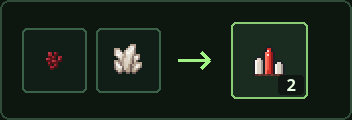

Référence · 0.2.1
Blocs et recettes
Fabriquer des ingrédients à partir des fichiers de recettes du mod.
Établi du biologiste

- 3 × Verre
- 5 × Lingot de fer
- 1 × Établi
Liquide porteur

- 1 × Potion
- 1 × Sucre
- 1 × Boule de slime
Catalyseur

- 1 × Verrues du Nether
- 1 × Quartz du Nether
Centrifugeuse

- 5 × Lingot de fer
- 2 × Verre
- 1 × Poudre de redstone
- 1 × Fourneau
Seringue en or

- 1 × Seringue
- 3 × Lingot d'or
- 1 × Poudre de redstone
Base mutagène

- 1 × Liquide porteur
- 1 × Fiole d'expérience
Seringue en netherite

- 1 × Seringue en or
- 2 × Fragments de netherite
Sérum inverseur

- 1 × Liquide porteur
- 1 × Oeil d'araignée fermenté
Séquenceur

- 4 × Lingot de fer
- 2 × Verre
- 1 × Comparateur de redstone
- 1 × Longue-vue
Stabilisateur

- 1 × Liquide porteur
- 1 × Poudre lumineuse
Synthétiseur

- 4 × Lingot de fer
- 3 × Verre
- 1 × Alambic
- 1 × Poudre de redstone
Seringue

- 1 × Fiole
- 1 × Lingot de fer
- 1 × Pépite de fer